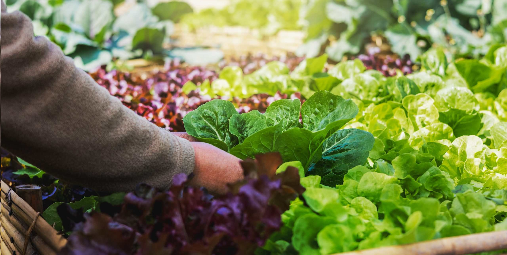
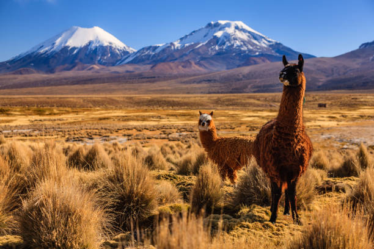

Organic Shop Bolivia
About Us

About
We are from Bolivia. Our farm is located in Achica Baja, a beautiful community located 3,800 masl, and 6 kilometers from the city of Viacha. We usually have a cold climate. The fauna is varied, from rabbits, sheep, and cattle to pumas and the Andean cat.
Do you want to know more about us?
Our Mision:
Respect nature through organic farming and sustainable processes.
Our Vision:
Grow and share our ecological products with more people. Innovate in our region with sustainable process and inspire future producers
Our Values:
Respect the enviroment.
Innovate.
Share.
About
Organic Shop Bolivia was founded in 2023. Our love for the nature, guide us to start a family business.
In the beggining, we were focused in organic farming in order to be more enviromentally friendly. Later, we ventured
into personal care. We have more ideas for the future, this is just the beginning.
We hope our customers feel the love in every product.